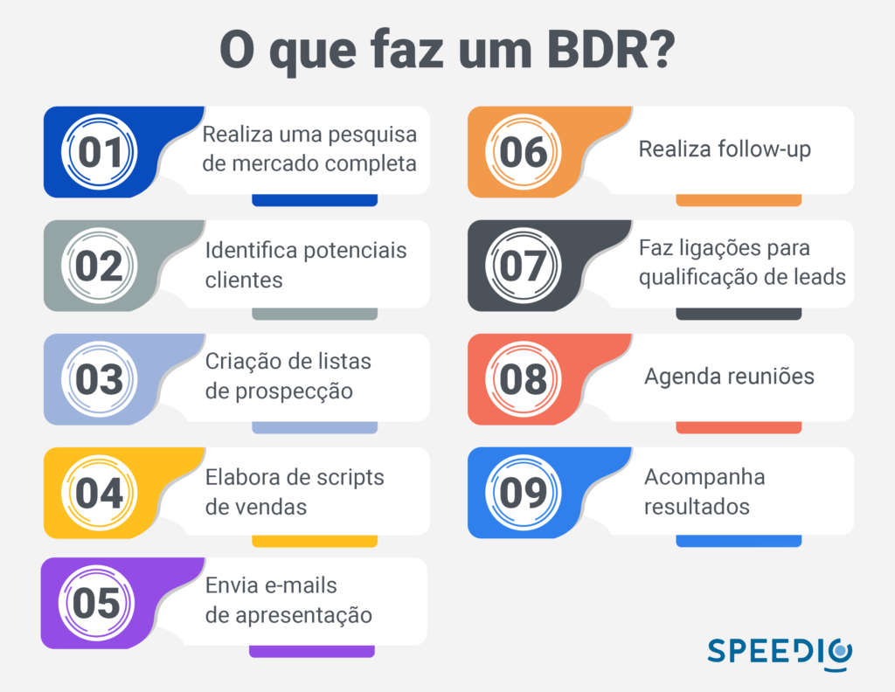
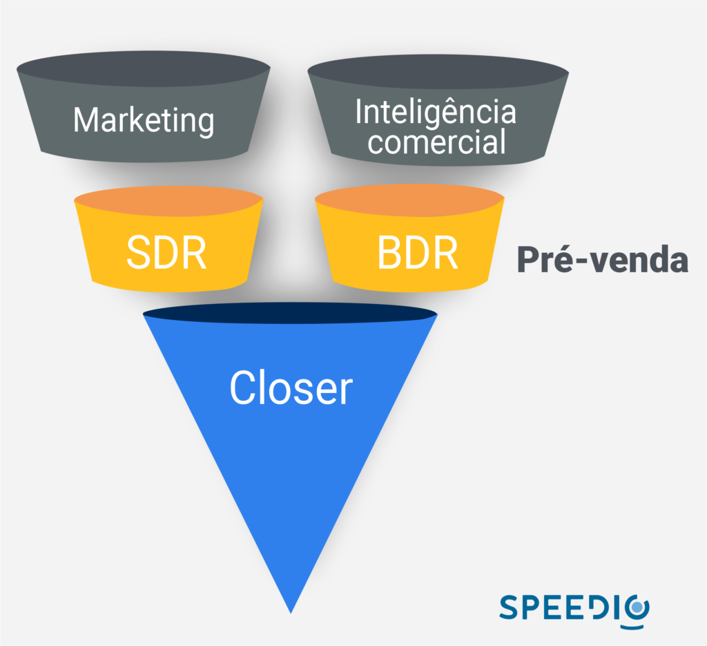

Artigos da Categoria
O que é BDR em vendas?
Neste post você verá
Saiba o que é BDR em vendas, suas principais características e as tendências que os profissionais da área encontram no mercado de pré-venda.
O que é BDR em vendas?
É um profissional que atua na etapa inicial do processo de vendas. O seu principal objetivo é qualificar leads e gerar oportunidades de vendas para a empresa, contribuindo para a geração de receita e o crescimento dos negócios.
O que faz um BDR (Business Development Representative)
Para entender melhor o papel deste profissional, é importante compreender o processo comercial de uma empresa. Ele costuma ser composto por várias etapas, que vão desde a identificação de leads, passando pela qualificação e nutrição desses, até a negociação e fechamento de vendas.
Ele atua na etapa de qualificação de leads, que consiste em identificar e avaliar se um lead tem o perfil adequado para se tornar um cliente da empresa. Isso envolve avaliar informações como o tamanho da empresa, a área de atuação entre outras variáveis relevantes.
O papel dele é fundamental para o sucesso do processo, pois ele atua como um filtro, garantindo que o closer invista seu tempo e esforço em leads que realmente têm potencial para se tornarem clientes.
Caso queira se aprofundar mais no assunto, neste artigo explicamos como funciona a pré-venda no outbound, leia e descubra tudo sobre o processo.

As habilidades essenciais de um BDR
Agora que você já sabe o que é um BDR, é hora de descobrir quais são as habilidades necessárias para que este profissional consiga se destacar em seu setor.
1 – Comunicação
Um BDR eficiente precisa ser capaz de se comunicar de forma clara e persuasiva com os potenciais clientes. Ele deve ser capaz de transmitir as informações da empresa e do produto de forma clara e convincente.
Para desenvolver essa habilidade, é importante que os profissionais pratiquem sua fala e melhorem sua habilidade de escrita, garantindo que suas mensagens sejam claras e objetivas.
2 – Escuta
Além de falar bem, eles precisam ser bons ouvintes. Nesse caso, eles devem ser capazes de entender as necessidades e desafios dos leads para poder oferecer soluções relevantes.
Para desenvolver essa habilidade, é importante que os BDRs pratiquem a escuta ativa, fazendo perguntas relevantes e prestando atenção às respostas dos leads.
3 – Pesquisa
Os BDRs precisam ser capazes de pesquisar e identificar leads relevantes para a empresa. Eles devem ser capazes de usar ferramentas de pesquisa e análise de dados para identificar oportunidades de vendas.
A Protocolo Hidra, por exemplo, é uma plataforma de big data que gera leads para a prospecção ativa B2B e é uma grande aliada dos BDRs. Os mais de 80 filtros dentro do sistema garantem que este profissional de pré-venda consiga ótimas listas de leads para qualificar.
Caso não saiba o que é o big data, escrevemos este artigo que vai te explicar tudo.
4 – Organização
Os BDRs precisam ser organizados para garantir que nenhuma oportunidade de vendas seja perdida. Eles devem ser capazes de gerenciar seu tempo e atividades de forma eficiente para maximizar sua produtividade.
Para desenvolver essa habilidade, é importante que os BDRs aprendam a gerenciar seu tempo de forma eficiente e a usar ferramentas de gerenciamento de tarefas.
5 – Persistência
O trabalho pode ser desafiador e frustrante, pois nem todos os leads estão prontos para comprar imediatamente. É preciso ser persistente e ter a capacidade de seguir em frente mesmo diante de rejeições.
Temos um artigo super completo que te explica as formas para que você possa superar as objeções em vendas no mercado B2B. Dê uma conferida.
Desafios e tendências para os BDRs
O papel dos BDRs tem evoluído ao longo dos anos, devido a vários fatores, incluindo a evolução da tecnologia e as mudanças no comportamento do consumidor.
Enquanto o objetivo principal dos BDRs permanece o mesmo, os desafios que enfrentam e as tendências que moldam seu papel estão em constante mudança.
Desafios para os BDRs
1 – Sobrecarga de informações
Com a quantidade de informações disponíveis na internet, os BDRs precisam estar preparados para lidar com uma quantidade cada vez maior de dados. É importante que eles saibam como filtrar as informações relevantes e usá-las de forma eficaz.
2 – Integração com a equipe de vendas
A colaboração entre BDRs e os closers é fundamental para o sucesso do processo de vendas. No entanto, muitas vezes, a integração entre as duas equipes é um desafio, especialmente quando há problemas de comunicação.
A passagem de bastão de um BDR para um closer deve ser suave e colaborativa, em que ambas as partes compartilhem informações relevantes e trabalhem em conjunto para construir uma estratégia comercial sólida e eficaz.
Quando isso é feito com sucesso, a equipe de vendas está bem equipada para fechar negócios de maneira consistente e sustentável.
3 – Competição acirrada
A competição no mercado B2B é cada vez maior, o que significa que os BDRs precisam se esforçar para se destacar e captar a atenção dos clientes em potencial. Isso pode exigir um conhecimento mais profundo do produto ou serviço, bem como a habilidade de criar uma conexão emocional com os clientes em potencial.
Tendências para os BDRs
1 – Automação de marketing
Com o avanço da tecnologia, a automação de marketing se tornou cada vez mais comum. Isso significa que os BDRs precisam estar familiarizados com as ferramentas de automação de marketing e como usá-las para aumentar a eficiência do processo de vendas.
2 – Personalização
Os consumidores esperam cada vez mais personalização na comunicação com as empresas. Os BDRs precisam estar preparados para personalizar sua abordagem de acordo com as necessidades e preferências dos clientes em potencial.
3 – Uso de dados
Os dados são uma parte fundamental do processo de vendas. Os BDRs precisam saber como coletar e analisar dados para identificar tendências e padrões que podem ajudá-los a aprimorar sua abordagem de vendas.
Diferença entre BDR e SDR
O BDR (Business Development Representative) e o SDR (Sales Development Representative) são dois papéis distintos dentro de uma equipe de vendas, com responsabilidades específicas para ajudar a gerar novos negócios.
O SDR é responsável por entrar em contato com leads (potenciais clientes) que já demonstraram algum interesse na empresa, por exemplo, preenchendo um formulário de contato ou baixando um material de marketing.
O SDR faz a qualificação desses leads e agenda reuniões com os closers para que possam aprofundar a conversa e fechar o negócio. O foco do SDR é, portanto, trabalhar com prospecção passiva, atendendo os leads gerados pelo inbound.
Por outro lado, o BDR é responsável por identificar e prospectar novos leads ativamente. Ele utiliza diversas técnicas para encontrar potenciais clientes e inicia o primeiro contato com eles, seja por e-mail, telefone ou mídias sociais.
O objetivo do BDR é criar uma base sólida de leads qualificados para que os closers possam dar continuidade ao processo de vendas. O foco é, portanto, trabalhar com prospecção ativa.

Quais as principais métricas do BDR?
O desempenho de um BDR pode ser medido através de uma série de métricas que refletem a eficácia de suas atividades de prospecção.
Número de leads gerados
Esta é uma métrica importante que mostra quantos leads um BDR foi capaz de gerar em um determinado período de tempo. Quanto maior o número de leads gerados, maior a chance de que alguns deles sejam qualificados e se transformem em oportunidades de vendas.
Uma das formas de gerar bons leads em uma ótima quantidade é através da Protocolo Hidra. Nossa plataforma de big data consegue mapear todas as empresas ativas do Brasil e com os mais 80 filtros, os BDRs podem selecionar todas as características que esperam encontrar em um cliente.
Taxa de resposta
Uma taxa de resposta alta indica que a seleção inicial de leads estão interessados em ouvir mais sobre a empresa e seus produtos ou serviços.
Taxa de conversão
Quanto maior a taxa de conversão, mais eficaz o BDR está em identificar leads que têm potencial para se tornarem clientes.
Agora que você já sabe o que é um BDR, é importante ter em mente que esses profissionais precisam estar preparados para se adaptar e evoluir para atender às necessidades em constante mudança do mercado.
Ao enfrentar esses desafios e aproveitar essas tendências, os BDRs podem continuar a ser uma peça valiosa para a empresa e ajudar a impulsionar o sucesso do processo de vendas.
para sua empresa